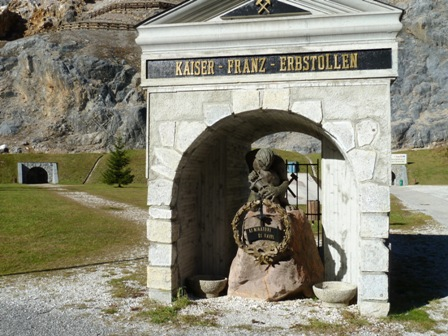
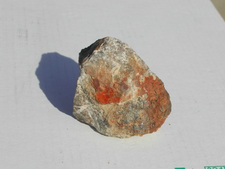

Gino e Aldo si trovano per caso in Slovenia dalle parti di Kobarid (Caporetto) e chiacchierano del 1917.
Aldo: -Mannaggia al piombo e allo zinco, per un pelo questi due metalli ci facevano perdere la guerra!
Gino: -Eh sì, chissà quanti proiettili (piombo) sono stati sparati sul fronte dell'Isonzo... e chissà quanti bossoli di ottone (zinco) sono stati usati per i cannoni...
Aldo: -Macchè proiettili, macchè cannoni, macchè bossoli, non c'entrano niente!
Gino: -Ma che stai a dire... Caporetto, piombo, disfatta, zinco... niente proiettili, niente cannoni... Aldo, non è che oggi sei più ribaltato del solito?
Aldo:- Ribaltato un corno, caro Gino, e ti ripeto ancora che nel 1917 siamo dovuti scappare a gambe levate da Caporetto proprio per colpa di quei due metalli!
Gino: -Questa è buona, voglio proprio vedere come riesci a convincermi di questa specie di sciocchezza che stai tirando in ballo.
Aldo: -Arrivo! Tiro in ballo una miniera poco lontana da qui, una semplice miniera. Si capisce che sarà una miniera di piombo e zinco!
Gino: -Vabbè, ti credo sulla fiducia. Fammela vedere, 'sta madre della disfatta.
Aldo: -Salta sulla moto e andiamo. Ci vediamo alle Cave del Predil, o meglio, a Raibl...
Seguiamo la vecchia DKW di Aldo e Gino e saliamo verso il Passo del Predil e poi giù dall'altra parte verso l'Italia.
---°°°OOO°°°---

Kaiser - Franz - Erbstollen...
Erbstollen non significa "sussurrare", come suggerisce il traduttore di Google, ma in gergo minerario vuol dire completamente un'altra cosa, e cioè "Galleria principale".
Il sussurro del Kaiser all'entrata della miniera di Raibl semmai io lo interpreto molto liberamente come un affettuoso ringraziamento verso quei minatori che persero la vita (prima austroungarici e poi italiani, il sussurro vale per tutti!) estraendo il prezioso minerale di piombo e zinco dalle viscere della montagna.
Come Gino, forse tanti non sanno che questa grandissima miniera tarvisiana (addirittura 34 livelli sovrapposti in un gigantesco labirinto di gallerie) giocò un bruttissimo tiro all'esercito italiano del 1917, ben contribuendo alla disastrosa ritirata di Caporetto.
In che modo giocò il tiro? La miniera di Raibl è strutturata su molti livelli, il più profondo dei quali va a sfociare dal 1899 con una lunghissima galleria di scolo delle acque nell'attuale Slovenia, presso Log pod Mangartom (Bretto).
A quei tempi era tutto Impero Austroungarico.
Ebbene, da questa galleria il Generale Otto von Bulow (assieme a quell'altra VOLPE di Erwin Rommel) fece transitare in gran segreto nell'ottobre del '17 quasi 450mila soldati e 240mila tonnellate di tonnellate di materiali per sorprendere fulmineamente ed in maniera inaspettata l'esercito italiano sul fronte dell'Isonzo, determinandone in pochi giorni la disfatta e l'arretramento precipitoso fino al Piave.
Visto che tutti quegli uomini e materiali che ho appena detto non passano in una galleriuzza in mezz'ora... mentre tutta questa roba passava, dicevo, dov'era e cosa faceva quel grande stratega di Cadorna?
Dov'era e cosa faceva Badoglio? Erano presi per altre faccende, molto fuori dal tiro delle schioppettate... ma facciamo finta di niente.
Poi le cose si risollevarono, grazie (finalmente!) anche alla sostituzione del Gran Fucilatore con Armando Diaz, mentre Badoglio, scappando, iniziava alla grande la sua augusta carriera.
Ma questa è tutta un'altra Storia, da leggersi altrove.
La cosa più curiosa di questa miniera è che a metà della famigerata galleria di Bretto dal 1947 fino al 1969 nelle viscere della terra passava uno dei confini di stato Italia-Iugoslavia e che un Carabiniere ed un Finanziere controllavano quei minatori che col microscopico trenino transitavano il VALICO DI FRONTIERA che dalla terra di Tito venivano a lavorare da noi.
[Siccome ho passato tante frontiere nella mia vita, ogni volta che ne attraverso una aperta e libera (come oggi tra Italia e Slovenia) mi viene da ringraziare mentalmente i due Stati che hanno eliminato le sbarre e la stupida frase: "-nulla da dichiarare?"].
Nel 1990 la miniera chiuse definitivamente i battenti e oggi la si visita come turisti.
Sono riuscito fortunosamente a recuperare un pessimo frammento mineralizzato a ferro, piombo e zinco degli scisti rocciosi, eccolo:

All'interno delle gallerie (nelle parti visitabili) non si viene in contatto con residui evidenti di mineralizzazione a portata di mano, non si può martellare niente e pertanto mi devo accontentare di questo "sassetto" assai poverello regalatomi da un gentile accompagnatore dell'organizzazione.
Purtroppo (anche questa volta!) il ferro la fa da padrone sotto forma della solita rugginosa limonite (ossido idrato di ferro FeO(OH).nH2O), mentre le tracce di galena (solfuro di piombo PbS) e blenda (solfuro di zinco ZnS) non si notano quasi per nulla nella fotografia, e devo dire che anche nel campione non sono certo abbondanti.
Su questo sassetto mi ripropongo per puro gioco di andar a verificare analiticamente i metalli contenuti: il ferro è troppo facile e lo lascerò perdere, il piombo non dovrebbe creare problemi, mentre per lo zinco tenterò di usare un metodo diverso dal solito e cioè con un reagente organico... ma quando sarà il momento ne riparlerò.